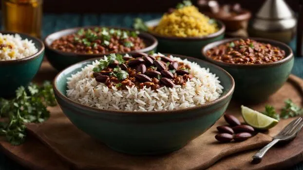

Rajma rice, also known as Rajma Chawal, is a popular North Indian comfort dish consisting of red kidney beans (rajma) cooked in a spiced tomato-onion gravy, served with steamed rice (chawal). The red kidney bean was originally brought to the Indian subcontinent from Mexico and has since become a staple in Northern India, Nepal, and Pakistan.